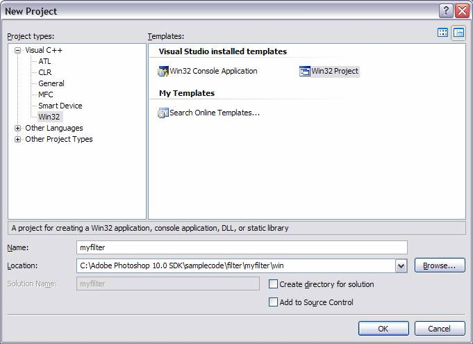
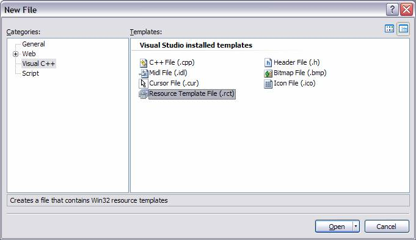
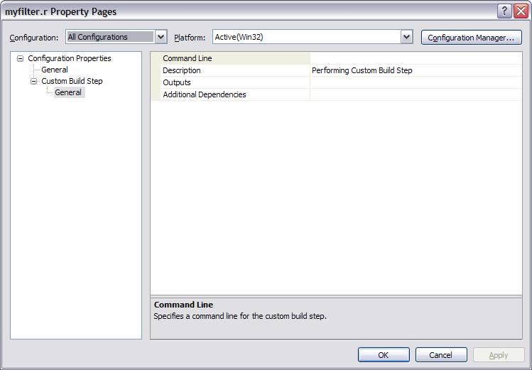
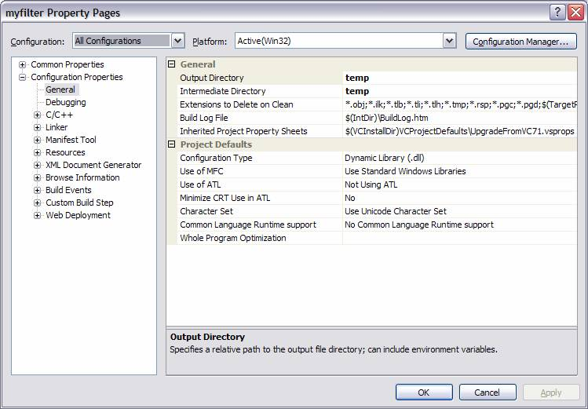
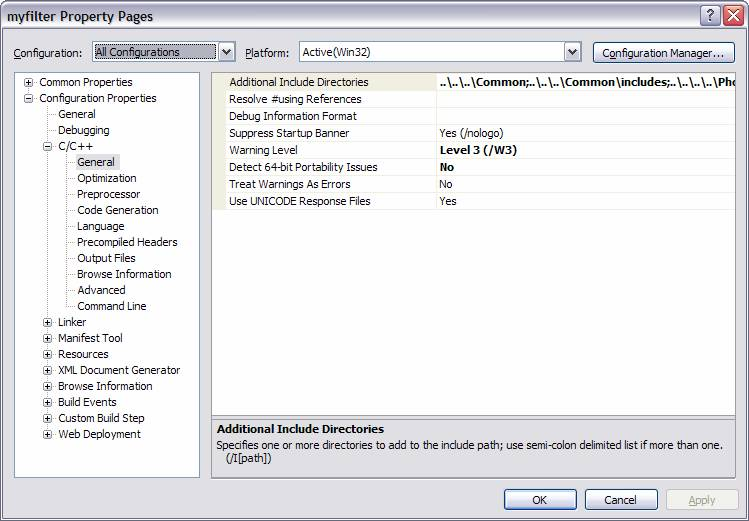
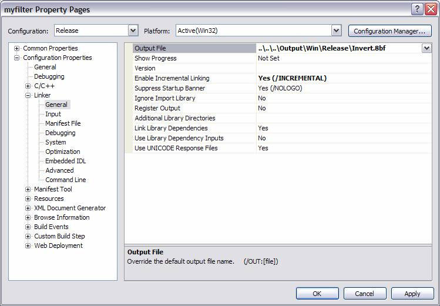

|
|
Adobe Photoshop SDK |
Getting Started
SDK API ReferenceSDK API Features
Other Documentation |
Creating plug-in modules for Windows
Sections on this Page- Hardware and software configuration
- Structure packing
- Resources
- Calling a Windows plug-in
- Creating a Visual C++ 2005 Project
- Installing plug-in modules
- Finding the plug-in directory in Windows
- What’s in this toolkit for Windows?
Photoshop plug-ins for Windows can be created using Microsoft ® Visual C++, version 2.0 or later (which requires Windows NT version 3.5 or later, or Windows 95). This toolkit has been checked under Visual C++ 5.0 and Windows NT 4.0.
When the user performs an action that causes a plug-in module to be called, Photoshop does a LoadLibrary call to load the module into memory. For each PiPL resource found in the file, Photoshop calls GetProcAddress(routineName) where routineName is the name associated with the PIWin32X86CodeProperty property to get the routine’s address.
If the file contains only PiMI resources and no PiPLs, Photoshop does a GetProcAddress for each PiMI resource found in the file looking for the entry point ENTRYPOINT% where % is the integer nameID of the PiMI resource to get the routine’s address.
Hardware and software configuration
Adobe Photoshop plug-ins may assume Windows 3.1 in standard or enhanced mode, Windows NT 3.5 or later, or Windows 95. Adobe Photoshop requires at least an 80386 processor.Photoshop 5.0 and later does not support Windows 3.1.
For development, you must have Windows NT or Windows 95. You cannot create Windows plug-ins with this toolkit under Windows 3.1.
Structure packing
Structure packing for all plug-in parameter blocks,FilterRecord, FormatRecord, AcquireRecord, ExportRecord, SelectionRecord, PickerRecord and AboutRecord, should be the default for the target system. The Info structures such as FilterInfo and FormatInfo must be packed to byte boundaries. The PiMI resource should be byte aligned.
These packing changes are reflected in the appropriate header files using #pragma pack(1) to set byte packing and #pragma pack() to restore default packing. These pragmas work only on Microsoft Visual C++ and Windows 32 bit SDK environment tools. If you are using a different compiler, such as Symantec C++ or Borland C++, you must modify the header files with appropriate pragmas. The Borland #pragmas still appear in the header files as they did in the 16-bit plug-in kit, but are untested.
Resources
The notion of resources is central to the Mac OS, and this carries through to Photoshop. The PiPL resource (described in Cross Application Plug-in Development Resource Guide) introduced with Photoshop 3.0 and the older PiMI resource are declared in Macintosh Rez format in the filePIGeneral.r.Windows has a similar notion of resources, although they are not the same as on Mac OS.
Creating or modifying PiPL resources in Windows
Even under Windows, you are encouraged to create and edit PiPL resources in the Macintosh format, and then use the CNVTPIPL.EXE utility. For a complete discussion of creating or modifying PiPL resources in Windows-only development environments, refer to the Cross Application Plug-in Development Resource Guide.
Calling a Windows plug-in
You need aDLLInit() function prototyped as BOOL APIENTRY DLLInit(HANDLE, DWORD, LPVOID);
The actual name of this entry point is provided to the linker by the
PSDLLENTRY=DLLInit@12
The way that messages are packed into wParam and lParam changed for Win32. You will need to insure that your window procedures extract the appropriate information correctly. A new header file WinUtil.h defines all the Win32 message crackers for cross-compilation or you may simply change your extractions to the Win32 versions. See the Microsoft document, Win32 Application Programming Interface: An Overview for more information on Win32 message parameter packing.
Be sure that the definitions for your Windows callback functions such as dialog box functions conform to the Win32 model. A common problem is to use of WORD wParam for callback functions. The plug-in examples use
BOOL WINAPI MyDlgProc(HWND hWnd, UINT uMsg, WPARAM wParam, LPARAM lParam)
Creating a Visual C++ 2005 Project
This section gives you step-by-step instructions to set up a project workspace for a Photoshop plug-in on Windows, using Visual C++ 2005. When creating a new plug-in, you are encouraged to start with a copy of a working plug-in of the type you are building. The sample plug-ins included with the SDK are an excellent place to start, if you don't have any of your own plug-ins already running. The example for setting up the project workspace provided in this section demonstrates copying the simple filter example Dissolve.Follow these steps to copy an existing project into a new project workspace, and build a new plug-in from the project:
- Create the Directory Structure
- Create a Project Workspace
- Move the Project
- Add the Main Source File
- Add Other Necessary Source Files
- Add a Resource File
- Add a PiPL Resource File
- Enter Custom Build Settings for PiPL
- Enter Overall Build Settings for the Project
- Building the Plug-in
Create the Directory Structure
The project workspace discussed in this section, follows the directory structure provided in the sample code included with the Photoshop SDK. The plug-in name for this project is "myfilter". Replace this with the name of your plug-in.Create three folders, myfilter, common and win:
C:\Adobe Photoshop 10.0 SDK\samplecode\filter\myfilter C:\Adobe Photoshop 10.0 SDK\samplecode\filter\myfilter\common C:\Adobe Photoshop 10.0 SDK\samplecode\filter\myfilter\win
Create a Project Workspace
All Windows Photoshop plug-ins have three basic properties. They are shared libraries, they have a PiPL resource, and they have a program entrypoint or main function.
- Launch Microsoft Visual C++ 2005, or Visual Studio 2005.
- Choose from the menu "File" > "New" > "Project".
- Under Project Types, select "Win32"
- From the list of templates, choose "Win32 Project".
- In the "Name:" field, type "myfilter" (or the name of your plug-in).
- In the "Location:" field, type in the location for your project. Set the path similar to the following:
C:\Adobe Photoshop 10.0 SDK\samplecode\filter\myfilter\win. - Do not check "Create Directory for Solution"
- Click "OK". 
- The "Win32 Application Wizard" appears.
- Click "Next".
- Select Application Type: "DLL'
- Select Additional Options: "Empty Project".
- Click "Finish".
- The project appears in the Solutions Explorer.
Move the Project
When creating a new project, Visual C++ makes a new folder and puts the project there. In this case, we want the files up a level, directly in themyfilter\win folder to be consistent with the Mac environment.
- Note:
- You can skip this step for your projects. Please make a note of your level change when using the relative paths later in this document.
- Close Visual C++, and navigate to location
C:\Adobe Photoshop 10.0 SDK\samplecode\filter\myfilter\win\myfilter. We want it up a level. - Select all the files and copy them.
- Move them up a level (
..\samplecode\filter\myfilter\win). - Delete the
win\myfilterfolder that the files where copied from.
Add the Main Source File
Now you have a blank project to work from. The first step is to add the main source file, which subsequently allows us to enter build settings for a C++ project. To do this, we copy the main source file from the dissolve filter.
- Launch Visual C++ by double clicking on the
myfilter.vcprojfile. - Choose from the menu, "File" > "Open".
- Navigate to the location of the main source file you want to copy. (
C:\Adobe Photoshop 10.0 SDK\samplecode\filter\invert\common) - Select "File" > "Save Dissolve.cpp As"
- Navigate to the
..\samplecode\filter\myfilter\commondirectory. - Save the file as "myfilter.cpp"
- Under the Solution Explorer navigation bar, right click on the "Source Files" folder.
- Select "Add" > "Existing Item".
- Navigate to the
..\samplecode\filter\myfilter\commondirectory. - Select file "myfilter.cpp".
- Edit the file to replace occurances of "dissolve" with "myfilter".
- Save and close the "myfilter.cpp".
Add Other Necessary Source Files
Most projects that you copy from have additional source and header files you need to include in order for the project to build. The dissolve example does not have an include file of its own, but it does require several common source files (from..\samplecode\common\sources) that provide support utilites for the plug-in. We need to add these .cpp files to the project. Any common header files required by the plug-in are pulled in during the build step by providing an additional include directory.
- Under the Solution Explorer navigation bar, right click on the "Source Files" folder.
- Select "Add" > "Existing Item".
- Navigate to the
..\samplecode\common\sourcesdirectory. - Double click on "FilterBigDocument.cpp".
- Repeat the previous set of steps to add "PIDLLInstance.cpp".
- Repeat the previous set of steps to add "PIUSuites.cpp".
- Repeat the previous set of steps to add "PIWinUI.cpp".
- Repeat the previous set of steps to add "PropertyUtils.cpp".
Add a Resource File
You must add a resource file (.rc), which holds an include to the PiPL resource file created in the next step.
- Choose from the menu "File" > "New" > "File".
- Under "Categories" select "Visual C++".
- Under "Templates" select "Resource Template File (.rct)". 
- A "ResTempl1.rct" folder appears in the edit pane.
- Right click on the folder and select "Add Resource"
- When the "Add Resource" box appears, select "Dialog".
- Click "New" to add the dialog to the resource file.
- Close the resource editor.
- Choose from the menu "File" > "Save ResTempl1.rct".
- The "Save File As" dialog box pops up.
- Navigate to the location
..\samplecode\filter\myfilter\win. - Choose "Save As Type" to be "Resouce Script (.rc)".
- Save the file as myfilter.rc.

- Open the resource file in the text editor.
- To do this, choose "File" > "Open".
- Navigate to the folder where the myfilter.rc file is located.
- Single click on the file.
- Click on the down arrow next to the "Open" button, choose "Open With".
- When the "Open With" box appears, select "Source Code (Text) Editor".
- Click "OK"
- A question dialog appears informing you that myfilter.rc is already open. Select "Yes", indicating you want to close the file.
- The myfilter.rc file opens in the edit pane in text mode.
- On approximately line 76, replace the line:
"\r\n"with the line:"#include ""temp\\myfilter.pipl""\r\n" - Scroll down to the end of the file to approximately line 93.
- Between line containing
"#ifndef APSTUDIO_INVOKED"and the line containing"#endif"insert the following text:#include "temp\\myfilter.pipl" - Change all occurrences of "Dissolve" with your plug-in's name, "myfilter" for this example.
- Save "myfilter.rc".
- In the Solution Explorer navigation pane, right click on "Resource Files".
- Select "Add" > "Existing Item".
- Browse to and double click on the "myfilter.rc" file that you just created.
Add a PiPL Resource File
We now need to create the PiPL resource (.r) file for the plug-in. We do this by copying the PiPL resource file from the dissolve project. Once the file is built, we will add the custom build settings for the PiPL, described in the next step.
- Choose from the menu "File" > "Open" > "File".
- Navigate to the directory containing the PiPL resource file you want to copy. For this example, that is:
C:\Adobe Photoshop 10.0 SDK\samplecode\filter\dissolve\common - Select "File" > "Save Dissolve.r As"
- Navigate to the
..\samplecode\filter\myfilter\commondirectory. - Save the file as "myfilter.r"
- Edit the file to replace occurances of "dissolve" with "myfilter".
- Save and close "myfilter.r".
- In the Solution Explorer navigation pane, right click on "Resource Files".
- Select "Add" > "Existing Item".
- In the "Files of Type" box, select "All Files (*.*)".
- Browse to and double click on the "myfilter.r" file that you just created.
- When the box appears asking if you want to create custom build rules, click "No". (We will do this from the file's property page, instead.)
Enter Custom Build Settings for PiPL
Next we will enter the custom build rules for the PiPL resource file. You need to convert a Mac OS resource file into a Windows-compatible resource. You do this using the Visual C++ custom build step and theCNVTPIPL.EXE found in the SDK.
- In the Solution Explorer navigation pane, right click on the "myfilter.r" file.
- Select "Properties".
- The Property Page dialog box for myfilter.r appears.
- In the "Configuration:" field, select "All Configurations", indicating this rule applies to all types of builds.
- Click on the "+" next to "Custom Build Step", then click on "General". 
- Click on "Command Line", then on the ellipsis icon at the end of the line. There are three lines to enter into the custom build command line box. (NOTE: You need to change the paths if you placed your project in a different folder.)
- First, create a temporary .rr file, by entering the following as the first line in the box, and this must all be on a single line, not split on two lines as it is shown here:
cl /I..\..\..\Common\Includes /I..\..\..\..\PhotoshopAPI\Photoshop /I..\..\..\..\PhotoshopAPI\PICA_SP /I..\..\..\Common\Resources /EP /DWIN32=1 /Tc"$(InputPath)" > "$(IntDir)\$(InputName).rr"
- Next, enter the command to invoke CNVTPIPL.EXE:
..\..\..\resources\cnvtpipl.exe "$(IntDir)\$(InputName).rr" "$(IntDir)\$(InputName).pipl"
- Finally, enter the command to delete the temporary file.
del "$(IntDir)\$(InputName).rr"
- First, create a temporary .rr file, by entering the following as the first line in the box, and this must all be on a single line, not split on two lines as it is shown here:
- Click on "Outputs", and then on the down arrow at the end of the line.
- Enter the following into the box:
$(IntDir)\$(InputName).pipl
- Click "OK".
Enter Overall Build Settings for the Project
At this point the project is set up with all the appropriate files. You must now change the project settings to build a proper Photoshop plug-in. We do this by using the Property Page for the project, and modifying each of the sections of the build process.
- In the Solution Explorer navigation pane, right click on the "myfilter" project icon.
- Select Properties.
- Under "Configuration Properties", click on the "General" item.
- In the "Configuration:" field, select "All Configurations".
- In both the "Intermediate Directory" and "Output Directory" sections, type "temp".
- In the "Inherited Property Project Sheets" enter:
$(VCInstallDir)VCProjectDefaults\UpgradeFromVC71.vsprops
- Select "Apply". Your property page should look something like: 
- Click on the "+" next to the "C/C++" item.
- Click on "General" under C++.
- Enter the following paths into "Additional Include Directories" (NOTE: If you did not put your plug-in into the SDK, these relative paths will not work. Make sure your paths point to these folders that are in the Photoshop SDK.)
..\..\..\Common, ..\..\..\Common\includes, ..\..\..\..\PhotoshopAPI, ..\..\..\..\PhotoshopAPI\ADM, ..\..\..\..\PhotoshopAPI\Photoshop, ..\..\..\..\PhotoshopAPI\General, ..\..\..\..\PhotoshopAPI\PICA_SP - Set "Detect 64-bit portability issues" to "No".
- Click Apply. Your properties page should look something like: 
- Enter the following paths into "Additional Include Directories" (NOTE: If you did not put your plug-in into the SDK, these relative paths will not work. Make sure your paths point to these folders that are in the Photoshop SDK.)
- Click on the "Preprocessor" item.
- Select "Preprocessor Definitions", then select the ellipsis at the end of the line to view the preprocessor options.
- Set the preprocessor defintions to the following list:
ISOLATION_AWARE_ENABLED WIN32 _DEBUG _WINDOWS _USRDLL Dissolve_EXPORTS - The following preprocessor defintions should come from the inherited section:
_VC80_UPGRADE=0x0710 _WINDLL _MBCS - If inherited items are different, or incomplete, then deselect the "Inherit from parent or project defaults" check box, and enter the three items above directly into the preprocessor definitions box.
- Click on the "Output Files" item.
- In the "Configurations:" field, select "Release".
- For "ASM List Location", "Object File Name", and "Database File Name", enter
.\..\..\..\Output\Objs\myfilter\Release// - Click Apply.
- In the "Configurations:" field, select "Debug".
- For "ASM List Location", "Object File Name", and "Database File Name", enter
.\..\..\..\Output\Objs\myfilter\Debug// - Click Apply.
- Click on the "Advanced" item.
- In the "Configurations:" field, select "All Configurations".
- In the "Compile As" field, select "Default".
- Click on the "-" next to the "C/C++" item, to close the list of C++ options.
- Click on "General" under C++.
- Click on the "+" next to the "Linker" item.
- Click on the "General" item.
- In the "Configurations:" field, select "Release".
- In the "Output File" field, enter:
..\..\..\Output\Win\Release\myfilter.8bfReplacing "myfilter" with the name of your plug-in. (.8bf is the extension for filter plug-in files.) - In the "Enable Incremental Linking field", select "Yes"
- Click Apply. 
- In the "Configurations:" field, select "Debug".
- In the "Output File" field, enter:
..\..\..\Output\Win\Debug\myfilter.8bf - In the "Enable Incremental Linking field", select "Yes"
- Click Apply.
- Click on the "Input" item.
- In the "Configurations:" field, select "All Configurations".
- In the "Additional Dependencies" field, enter
odbc32.lib odbccp32.lib version.lib - Click Apply.
- Click OK.
- Click on the "General" item.
Building the Plug-in
Now you are ready to build the plug-in.
- Choose from the menu "Build" > "Build myfilter", or "Build" > "Build Solution".
- If the plug-in builds correctly, you will find the plug-in executable file in
..\..\..\Output\Win\Release\myfilter.8bfor..\..\..\Output\Win\Debug\myfilter.8bf - If the plug-in does not build correctly, check all the steps above and ensure you have followed them correctly. As a final check, you can verify all the project property pages of your new plug-in with the project property pages of the plug-in you copied from.
Installing plug-in modules
To install a plug-in module, copy the .8B* files into the directory referred to in the Photoshop INI file with the profile stringPLUGINDIRECTORY. See Finding the plug-in directory in Windows.
When Adobe Photoshop first executes, it searches the files in the PLUGINDIRECTORY, looking for plug-in modules. When it finds a plug-in, it checks its version number. If the version is supported, it adds name of the plug-in to the appropriate menu or to the list of extensions to be executed.
Each kind of plug-in module has its own 4-byte resource type. For example, acquisition modules have the code 8BAM.
The actual resource type must be specified as _8BAM in your resource files to avoid a syntax error caused by the first character being a number.
For example, Adobe Photoshop searches for Import modules by examining the resources of all files in PLUGINDIRECTORY with file extension .8B* for resource type _8BAM. For each 8BAM, the integer value which uniquely identifies the resource, nameID, must be consecutively numbered starting at 1.
Finding the plug-in directory in Windows
To find the plug-in directory in Windows in versions of Photoshop before 5.0:- Do a registry search for the Photoshp.exe key:
HKEY_LOCAL_MACHINE\SOFTWARE\Adobe\Photoshop - The directory that Photoshop is in will have the folder Prefs which contains the Photoshop INI file.
- Open the Photoshop INI file and do a search for the
PLUGINDIRECTORYtag. - If the tag exists, it will return the path to the plug-in folder. If the tag does not exist, you can assume the plug-in folder is the default: in the same folder with the Photoshop executable under the name Plugins.
To find the plug-in directory in Windows in Adobe Photoshop 5.0 and later:
- Do a registry search for the Photoshp.exe key:
HKEY_LOCAL_MACHINE\SOFTWARE\Adobe\Photoshop - The directory that Photoshop is in will have a directory,
Adobe Photoshop Settings.That folder contains the Photoshop INI file. - Open the Photoshop INI file and do a search for the
PLUGINDIRECTORYtag. - If the tag exists, it will return the path to the plug-in folder. If the tag does not exist, you can assume the plug-in folder is the default: in the same folder with the Photoshop executable under the name Plug-Ins.
Or, easier:
- Do a registry search for the PlugInPath key:
HKEY_LCOAL_MACHINE\SOFTWARE\Adobe\Photoshop\9.0\PlugInPath - If the tag exists, it will return the path to the plug-in folder. If the tag does not exist, you can assume the plug-in folder is the default: in the same folder with the Photoshop executable under the name Plug-Ins.
What’s in this toolkit for Windows?
This toolkit contains documentation, and literature on the Adobe Developers Association, and examples specifically written for Windows.
Examples
The sample plug-ins included with this toolkit can be built using Visual C++ 2.0 or Visual C++ 4.0. There are project files for both compilers. The Visual C++ 4.0 project file is the same name as the example with "40" after it (such as Dissolve40.mdp).
Sources.cpp and Headers.h
WinUtils.c provides support for some Mac Toolbox functions used in PIUtilities.c, including memory management functions such as NewHandle(). The header file PITypes.h contains definitions for common Mac result codes, data types, and structures. These simplify writing plug-in modules for both the Mac OS and Windows. PIAbout.h contains the information for the about box call for all plug-in types. PIActions.h contains the information for the Actions suite callbacks for all plug-in types. PIAcquire.h, PIExport.h, PIExtension.h, PIFilter.h, PIFormat.h, PIPicker.h, and PISelection.h are the header files for the respective types of plug-in modules.
Utilities
WinDialogUtils.c and WinDialogUtils.h provide general support for doing things with dialogs including creating movable modal dialogs which make appropriate calls back to the host to update windows, as well as simple support for putting data back into the dialog for display, such as StuffNumber() and StuffText().
PIUtilities.c and PIUtilities.h contain various routines and macros to make it easier to use the host callbacks. The macros make assumptions about how global variables are being handled and declared; refer to the sample source code to see how PIUtilities is used. The Windows version of this toolkit also includes two handy utility programs: MACTODOS.EXE and CNVTPIPL.EXE.
MACTODOS.EXE converts Macintosh text files into PC text files by changing the line ending characters.
CNVTPIPL.EXE converts PiPL resources in Macintosh Rez format (ASCII format which conforms to the PiPL resource template) into the Windows PiPL format. Refer to Cross Application Plug-in Development Resource Guide for more information about PiPL resources.
To use CNVTPIPL.EXE, you need to pre-process your plugin.r file using the standard C pre-processor and pipe the output through CNVTPIPL.EXE. The example makefiles illustrate the process.
Documentation
Photoshop SDK Guide.pdf is this guide. Cross Application Plug-in Development Resource Guide is a reference tool for developing Photoshop plug-ins that work with all of Adobe’s major graphical applications. It also includes information on host applications and their use of different code and file resources such as PiMI and PiPL resources.
Developer Services
The Developer Services directory provides information and an application for the Adobe Developers Association, which provides not only support for this and the other Adobe toolkits, but marketing and business resources for third party developers.